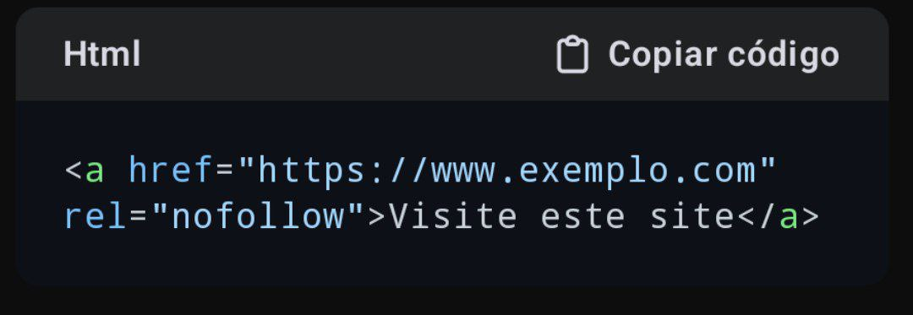

Aqui está a nossa Terceira página
Voltar para a página inicial
O atributo nofollow é usado em links HTML para indicar aos motores de busca que eles não devem seguir aquele link ou passar autoridade de SEO para a página de destino. É implementado como um valor no atributo rel do elemento . Por exemplo:
1. Evitar passar autoridade de SEO: Links pagos ou patrocinados devem usar nofollow para evitar manipulação de rankings nos motores de busca.
2. Comentários ou seções geradas por usuários: Para evitar que links adicionados por usuários em comentários ou fóruns passem autoridade para possíveis sites de spam.
3. Sites não confiáveis: Quando você não quer associar sua página a um site de baixa qualidade.
Links com nofollow não transmitem PageRank ou autoridade para a página de destino. Eles ainda podem ser clicáveis, mas são ignorados pelos algoritmos de ranqueamento dos motores de busca. Desde 2019, o Google também usa nofollow como uma "sugestão" para entender links, em vez de tratá-lo como uma diretiva rígida.
Esta página é um oferecimento de Hostnet